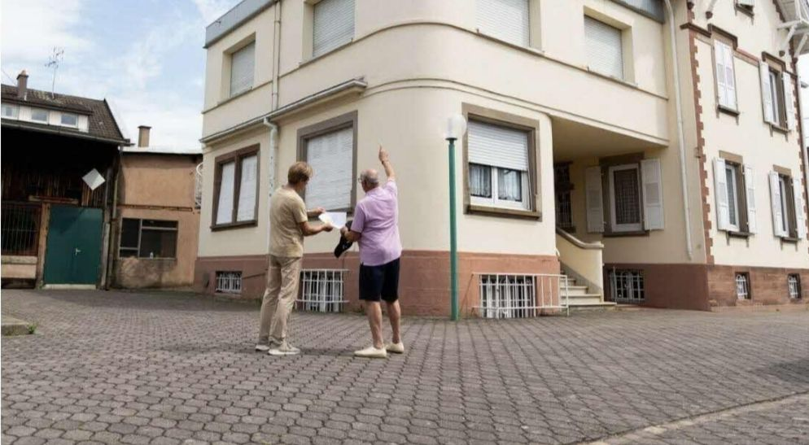

Habitat vivant
Identifier, etudier et remettre en usage des logements vacants ou inutilises.
En savoir plusAgence territoriale
Nous identifions, accompagnons et remettons en usage les logements, commerces, batiments, terrains et ressources inutilises au service des territoires.

Nos actions
Identifier, etudier et remettre en usage des logements vacants ou inutilises.
En savoir plus
Accompagner la reactivation de locaux commerciaux et d activites utiles.
En savoir plus
Qualifier des espaces delaisses et imaginer de nouveaux usages territoriaux.
En savoir plus
Valoriser les materiaux et ressources dormantes dans des projets encadres.
En savoir plus
Mobiliser les competences, l engagement et les chantiers encadres.
En savoir plusNotre mission
TVF n'est pas une agence immobiliere classique. Sa mission est de transformer une situation dormante en dossier lisible : comprendre le bien, verifier le besoin, reunir les acteurs, preparer le cadre et suivre les suites dans TVF OS.
Le modele associe les proprietaires, collectivites, entreprises, associations, citoyens et partenaires autour d'un objectif commun : remettre en usage ce qui peut redevenir utile.
Comprendre TVF
Engagements
Chaque dossier part d'un bien, d'un besoin local et d'un cadre realiste.
Diagnostic, orientation, convention, materiaux ou cooperation selon la situation.
Pas de faux chiffres ni de partenaires non officialises.
Les demandes sont rattachees a TVF OS pour conserver l'historique.